library(tidyverse)
library(cowplot)
library(broom)
library(modelr)
library(viridis)
library(lubridate)
library(hms)
library(knitr)
library(kableExtra)
knitr::opts_chunk$set(tidy.opts=list(width.cutoff=60),tidy=TRUE, echo = TRUE, message=FALSE, warning=FALSE, fig.align="center")
source("../../tools/echem_processing_tools.R")
source("../../tools/plotting_tools.R")
theme_set(theme_1())idaA_tran1 = "../data/biofilm_A/tran_1/"
idaA_tranEtBr_2 = "../data/biofilm_A/tranEtBr_2/"
idaA_tranEtBr_3 = "../data/biofilm_A/tranEtBr_3/"
idaB_tran1 = "../data/biofilm_B/tran_1/"
idaB_tranEtBr_2 = "../data/biofilm_B/tranEtBr_2/"
idaB_tranEtBr_3 = "../data/biofilm_B/tranEtBr_3/"
data_cols <- c("E", "i1", "i2")
swv_skip_rows = 18
gc_skip_rows = 21# Add 'reactor' to file name so it is parsed into column
filename_cols = c("biofilm", "reactor", "reactor_num", "condition",
"echem", "rep")
swv_idaA_tran1_names <- dir(path = idaA_tran1, pattern = "[swv]+.+[txt]$") %>%
paste("A_transfer_1_pbsPBS", ., sep = "_")
swv_idaA_tranEtBr_2_names <- dir(path = idaA_tranEtBr_2, pattern = "[swv]+.+[txt]$") %>%
paste("A_transfer_2_pbsEtBr", ., sep = "_")
swv_idaA_tranEtBr_3_names <- dir(path = idaA_tranEtBr_3, pattern = "[swv]+.+[txt]$") %>%
paste("A_transfer_3_etbrEtBr", ., sep = "_")
swv_idaB_tran1_names <- dir(path = idaB_tran1, pattern = "[swv]+.+[txt]$") %>%
paste("B_transfer_1_pbsPBS", ., sep = "_")
swv_idaB_tranEtBr_2_names <- dir(path = idaB_tranEtBr_2, pattern = "[swv]+.+[txt]$") %>%
paste("B_transfer_2_pbsEtBr", ., sep = "_")
swv_idaB_tranEtBr_3_names <- dir(path = idaB_tranEtBr_3, pattern = "[swv]+.+[txt]$") %>%
paste("B_transfer_3_etbrEtBr", ., sep = "_")
# Add correct paths separate from filenames
swv_idaA_tran1_paths <- dir(path = idaA_tran1, pattern = "[swv]+.+[txt]$") %>%
paste(idaA_tran1, ., sep = "")
swv_idaA_tranEtBr_2_paths <- dir(path = idaA_tranEtBr_2, pattern = "[swv]+.+[txt]$") %>%
paste(idaA_tranEtBr_2, ., sep = "")
swv_idaA_tranEtBr_3_paths <- dir(path = idaA_tranEtBr_3, pattern = "[swv]+.+[txt]$") %>%
paste(idaA_tranEtBr_3, ., sep = "")
swv_idaB_tran1_paths <- dir(path = idaB_tran1, pattern = "[swv]+.+[txt]$") %>%
paste(idaB_tran1, ., sep = "")
swv_idaB_tranEtBr_2_paths <- dir(path = idaB_tranEtBr_2, pattern = "[swv]+.+[txt]$") %>%
paste(idaB_tranEtBr_2, ., sep = "")
swv_idaB_tranEtBr_3_paths <- dir(path = idaB_tranEtBr_3, pattern = "[swv]+.+[txt]$") %>%
paste(idaB_tranEtBr_3, ., sep = "")
# Combine all SWVs into single vector
swv_names <- c(swv_idaA_tran1_names, swv_idaA_tranEtBr_2_names,
swv_idaA_tranEtBr_3_names, swv_idaB_tran1_names, swv_idaB_tranEtBr_2_names,
swv_idaB_tranEtBr_3_names)
swv_paths <- c(swv_idaA_tran1_paths, swv_idaA_tranEtBr_2_paths,
swv_idaA_tranEtBr_3_paths, swv_idaB_tran1_paths, swv_idaB_tranEtBr_2_paths,
swv_idaB_tranEtBr_3_paths)
# Read in all SWVs with one function call
swv_data <- echem_import_to_df(filenames = swv_names, file_paths = swv_paths,
data_cols = data_cols, skip_rows = swv_skip_rows, filename_cols = filename_cols,
rep = T, PHZadded = F) %>% mutate(rep = rep - 1)
swv_data %>% head() %>% kable() %>% kable_styling()| biofilm | reactor | reactor_num | condition | echem | rep | minutes | E | electrode | current |
|---|---|---|---|---|---|---|---|---|---|
| A | transfer | 1 | pbsPBS | swv | 0 | 940.4167 | 0.099 | i1 | 2e-07 |
| A | transfer | 1 | pbsPBS | swv | 0 | 940.4167 | 0.098 | i1 | 2e-07 |
| A | transfer | 1 | pbsPBS | swv | 0 | 940.4167 | 0.097 | i1 | 2e-07 |
| A | transfer | 1 | pbsPBS | swv | 0 | 940.4167 | 0.096 | i1 | 1e-07 |
| A | transfer | 1 | pbsPBS | swv | 0 | 940.4167 | 0.095 | i1 | 0e+00 |
| A | transfer | 1 | pbsPBS | swv | 0 | 940.4167 | 0.094 | i1 | 1e-07 |
ggplot(swv_data %>% filter(condition == "pbsPBS"), aes(x = E,
y = current, color = rep, group = rep)) + geom_path() + facet_wrap(biofilm ~
electrode, scales = "free") + scale_x_reverse() + labs(title = "Transfer 1: PBS to PBS")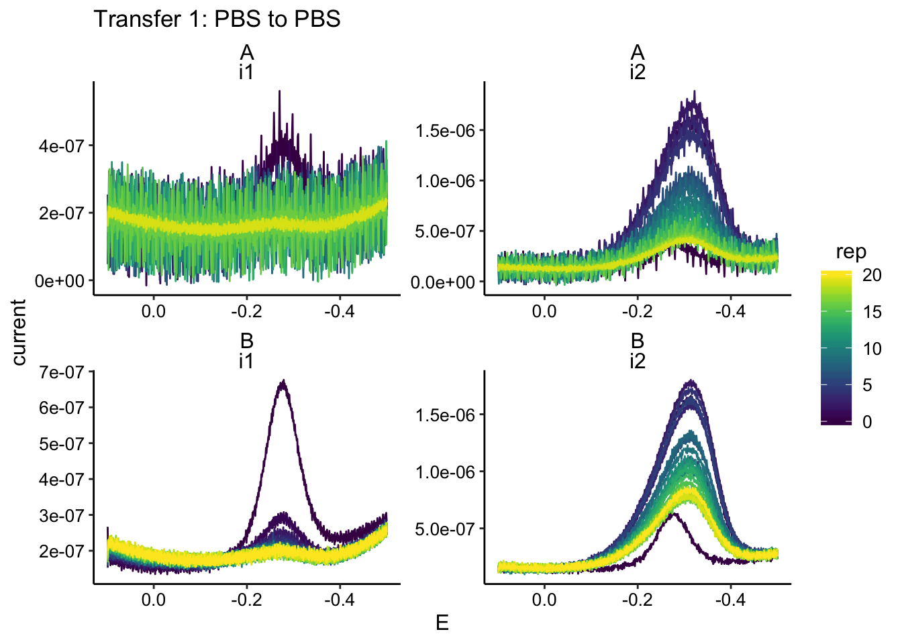
ggplot(swv_data %>% filter(condition == "pbsEtBr"), aes(x = E,
y = current, color = rep, group = rep)) + geom_path() + facet_wrap(biofilm ~
electrode, scales = "free") + scale_x_reverse() + labs(title = "Transfer 2: PBS to EtBr")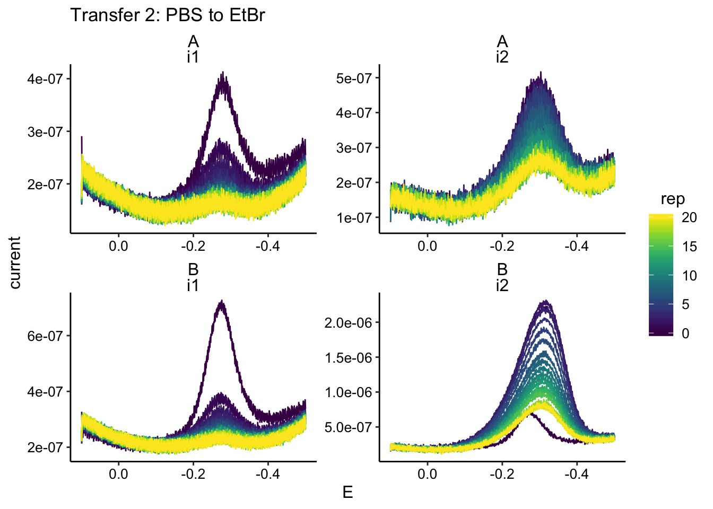
ggplot(swv_data %>% filter(condition == "etbrEtBr"), aes(x = E,
y = current, color = rep, group = rep)) + geom_path() + facet_wrap(biofilm ~
electrode, scales = "free") + scale_x_reverse() + labs(title = "Transfer 3: EtBr to EtBr")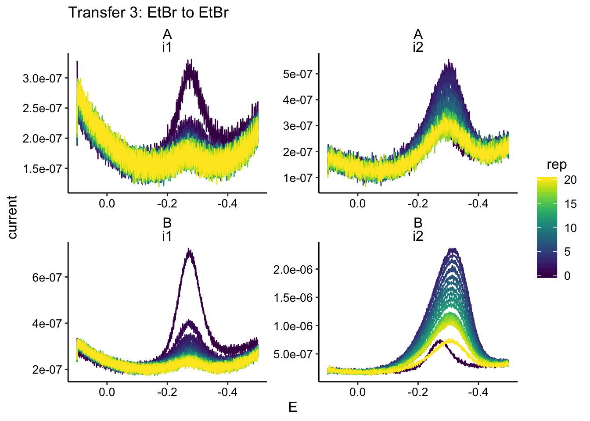
Probably need to smooth these SWVs if possible. Should look something like this:
ggplot(swv_data %>% filter(electrode == "i1"), aes(x = E, y = current,
color = rep, group = rep)) + geom_point(alpha = 0.5) + geom_smooth(span = 0.1,
se = F) + facet_wrap(biofilm ~ condition, scales = "free") +
scale_x_reverse()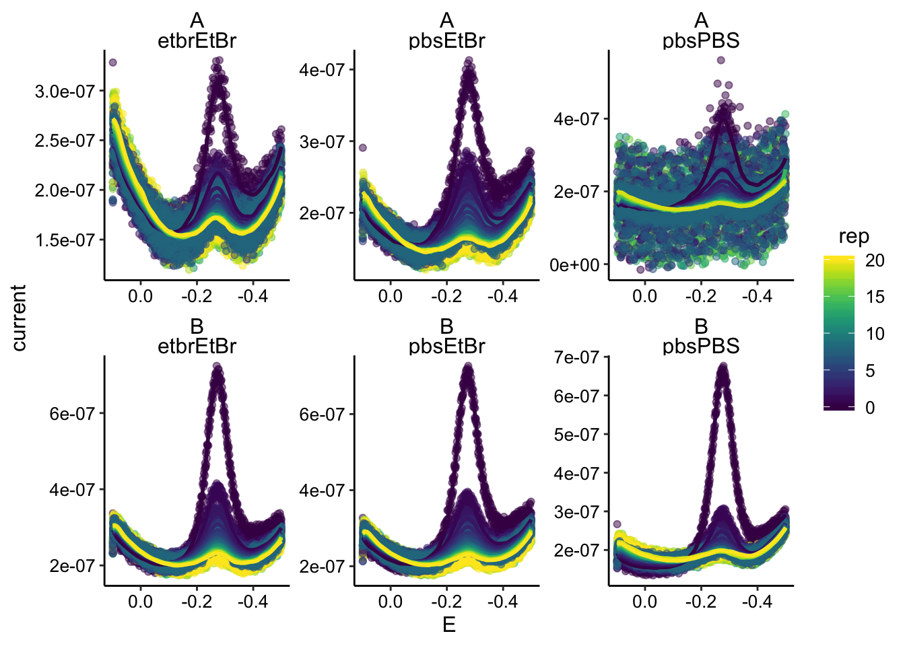 Let’s do it with loess()
smooth_loess <- function(df) {
loess(current ~ E, data = df, span = 0.1)
}
swv_data_smooth <- swv_data %>% # filter(biofilm == 'A' & condition == 'pbsPBS' & electrode
# == 'i1' & rep == 1) %>%
group_by(biofilm, condition, electrode, rep) %>% nest() %>% mutate(loess_mod = map(data,
smooth_loess)) %>% mutate(preds = map2(data, loess_mod, add_predictions)) %>%
unnest(preds)
ggplot(swv_data_smooth %>% filter(electrode == "i1"), aes(x = E,
y = current, color = rep, group = rep)) + geom_point(alpha = 0.5) +
geom_path(aes(y = pred)) + facet_wrap(biofilm ~ condition,
scales = "free") + scale_x_reverse()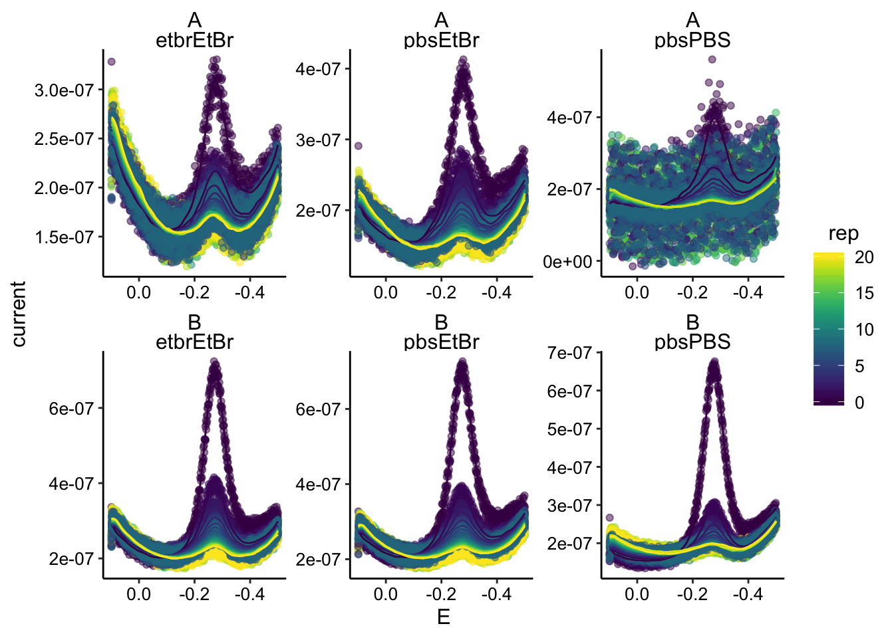
Looks good. Here’s what the max current data looks like unsmoothed:
swv_max <- swv_data %>% group_by(biofilm, condition) %>% mutate(min_time = min(minutes)) %>%
mutate(norm_time = minutes - min_time) %>% group_by(biofilm,
condition, rep, electrode) %>% filter(E > -0.4 & E < -0.2) %>%
mutate(max_current = max(abs(current)), ) %>% filter(abs(current) ==
max_current)
ggplot(swv_data %>% filter(electrode == "i1"), aes(x = E, y = abs(current),
color = rep, group = rep)) + geom_path() + geom_point(data = swv_max %>%
filter(electrode == "i1"), color = "red") + scale_x_reverse() +
facet_wrap(biofilm ~ condition)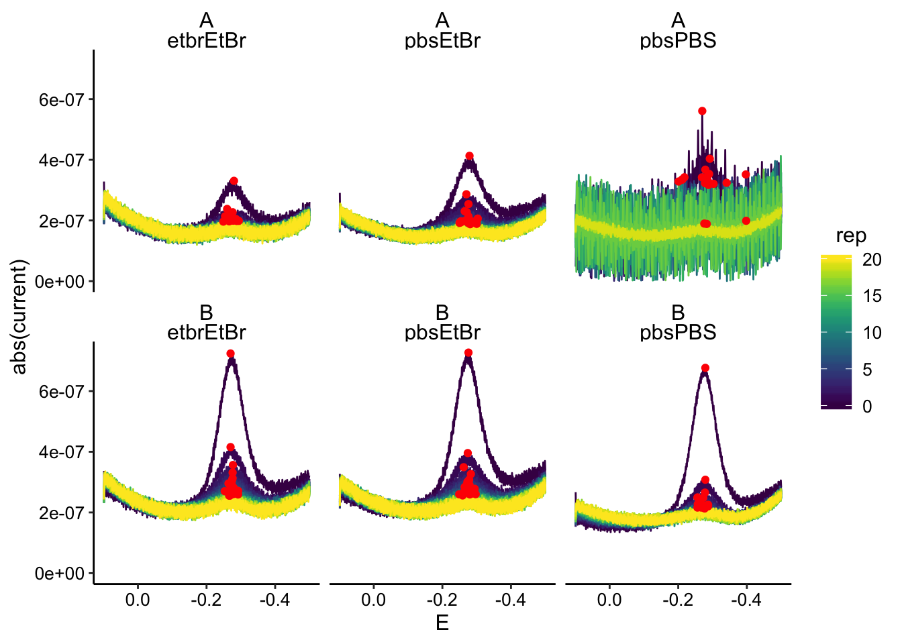
# ggplot(swv_max %>% filter(electrode == 'i1'), aes(x =
# minutes, y = max_current, color = condition)) +
# geom_point() + facet_wrap(~biofilm, scales = 'free')
ggplot(swv_max %>% filter(electrode == "i1"), aes(x = norm_time,
y = max_current, color = condition)) + geom_point() + facet_wrap(~biofilm,
scales = "free")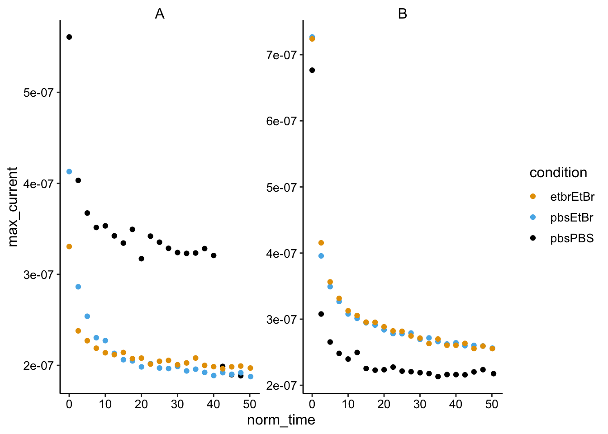
And here’s what it looks like smoothed:
swv_smooth_max <- swv_data_smooth %>% group_by(biofilm, condition) %>%
mutate(min_time = min(minutes)) %>% mutate(norm_time = minutes -
min_time) %>% group_by(biofilm, condition, rep, electrode) %>%
filter(E > -0.35 & E < -0.2) %>% mutate(max_current = max(abs(pred))) %>%
filter(abs(pred) == max_current)
ggplot(swv_data_smooth %>% filter(electrode == "i1"), aes(x = E,
y = abs(pred), color = rep, group = rep)) + geom_path() +
geom_point(data = swv_smooth_max %>% filter(electrode ==
"i1"), aes(y = max_current), color = "red") + scale_x_reverse() +
facet_wrap(biofilm ~ condition)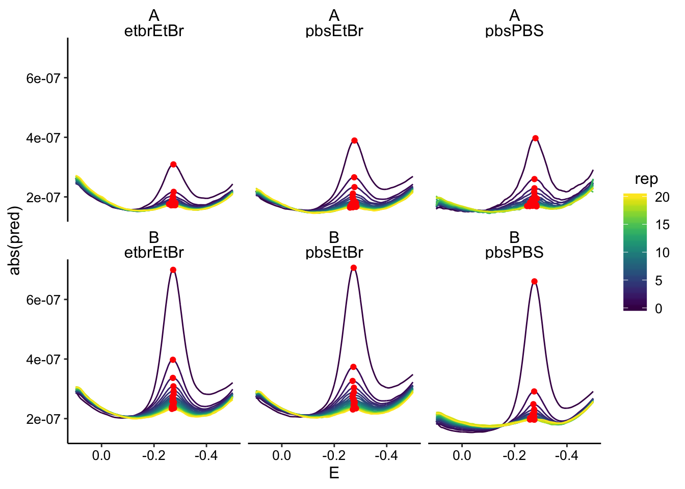
ggplot(swv_smooth_max %>% filter(electrode == "i1"), aes(x = norm_time,
y = max_current, color = condition)) + geom_point() + facet_wrap(~biofilm,
scales = "free")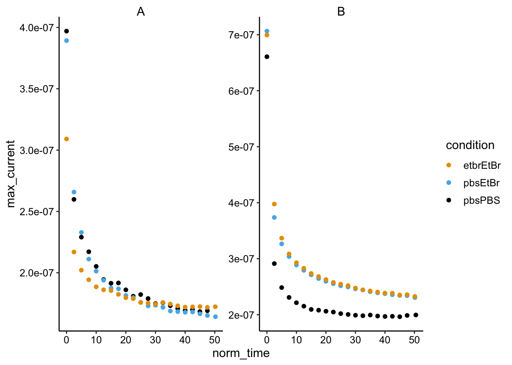 Looks good, I’m going to used this smoothed data from here on.
# Add 'reactor' to file name so it is parsed into column
filename_cols = c("biofilm", "reactor", "reactor_num", "condition",
"echem", "rep")
gc_idaA_tran1_names <- dir(path = idaA_tran1, pattern = "[gc]+.+[txt]$") %>%
paste("A_transfer_1_pbsPBS", ., sep = "_")
gc_idaA_tranEtBr_2_names <- dir(path = idaA_tranEtBr_2, pattern = "[gc]+.+[txt]$") %>%
paste("A_transfer_2_pbsEtBr", ., sep = "_")
gc_idaA_tranEtBr_3_names <- dir(path = idaA_tranEtBr_3, pattern = "[gc]+.+[txt]$") %>%
paste("A_transfer_3_etbrEtBr", ., sep = "_")
gc_idaB_tran1_names <- dir(path = idaB_tran1, pattern = "[gc]+.+[txt]$") %>%
paste("B_transfer_1_pbsPBS", ., sep = "_")
gc_idaB_tranEtBr_2_names <- dir(path = idaB_tranEtBr_2, pattern = "[gc]+.+[txt]$") %>%
paste("B_transfer_2_pbsEtBr", ., sep = "_")
gc_idaB_tranEtBr_3_names <- dir(path = idaB_tranEtBr_3, pattern = "[gc]+.+[txt]$") %>%
paste("B_transfer_3_etbrEtBr", ., sep = "_")
# Add correct paths separate from filenames
gc_idaA_tran1_paths <- dir(path = idaA_tran1, pattern = "[gc]+.+[txt]$") %>%
paste(idaA_tran1, ., sep = "")
gc_idaA_tranEtBr_2_paths <- dir(path = idaA_tranEtBr_2, pattern = "[gc]+.+[txt]$") %>%
paste(idaA_tranEtBr_2, ., sep = "")
gc_idaA_tranEtBr_3_paths <- dir(path = idaA_tranEtBr_3, pattern = "[gc]+.+[txt]$") %>%
paste(idaA_tranEtBr_3, ., sep = "")
gc_idaB_tran1_paths <- dir(path = idaB_tran1, pattern = "[gc]+.+[txt]$") %>%
paste(idaB_tran1, ., sep = "")
gc_idaB_tranEtBr_2_paths <- dir(path = idaB_tranEtBr_2, pattern = "[gc]+.+[txt]$") %>%
paste(idaB_tranEtBr_2, ., sep = "")
gc_idaB_tranEtBr_3_paths <- dir(path = idaB_tranEtBr_3, pattern = "[gc]+.+[txt]$") %>%
paste(idaB_tranEtBr_3, ., sep = "")
# Combine all gcs into single vector
gc_names <- c(gc_idaA_tran1_names, gc_idaA_tranEtBr_2_names,
gc_idaA_tranEtBr_3_names, gc_idaB_tran1_names, gc_idaB_tranEtBr_2_names,
gc_idaB_tranEtBr_3_names)
gc_paths <- c(gc_idaA_tran1_paths, gc_idaA_tranEtBr_2_paths,
gc_idaA_tranEtBr_3_paths, gc_idaB_tran1_paths, gc_idaB_tranEtBr_2_paths,
gc_idaB_tranEtBr_3_paths)
# Read in all gcs with one function call
gc_data <- echem_import_to_df(filenames = gc_names, file_paths = gc_paths,
data_cols = data_cols, skip_rows = gc_skip_rows, filename_cols = filename_cols,
rep = T, PHZadded = F)
gc_data %>% head() %>% kable() %>% kable_styling()| biofilm | reactor | reactor_num | condition | echem | rep | minutes | E | electrode | current |
|---|---|---|---|---|---|---|---|---|---|
| A | transfer | 1 | pbsPBS | gc | 1 | 942.7333 | 0.000 | i1 | 0 |
| A | transfer | 1 | pbsPBS | gc | 1 | 942.7333 | -0.001 | i1 | 0 |
| A | transfer | 1 | pbsPBS | gc | 1 | 942.7333 | -0.002 | i1 | 0 |
| A | transfer | 1 | pbsPBS | gc | 1 | 942.7333 | -0.003 | i1 | 0 |
| A | transfer | 1 | pbsPBS | gc | 1 | 942.7333 | -0.004 | i1 | 0 |
| A | transfer | 1 | pbsPBS | gc | 1 | 942.7333 | -0.005 | i1 | 0 |
ggplot(gc_data %>% filter(condition == "pbsPBS"), aes(x = E,
y = current, color = rep, group = rep)) + geom_path() + facet_wrap(biofilm ~
electrode, scales = "free") + scale_x_reverse() + labs(title = "Transfer 1: PBS to PBS")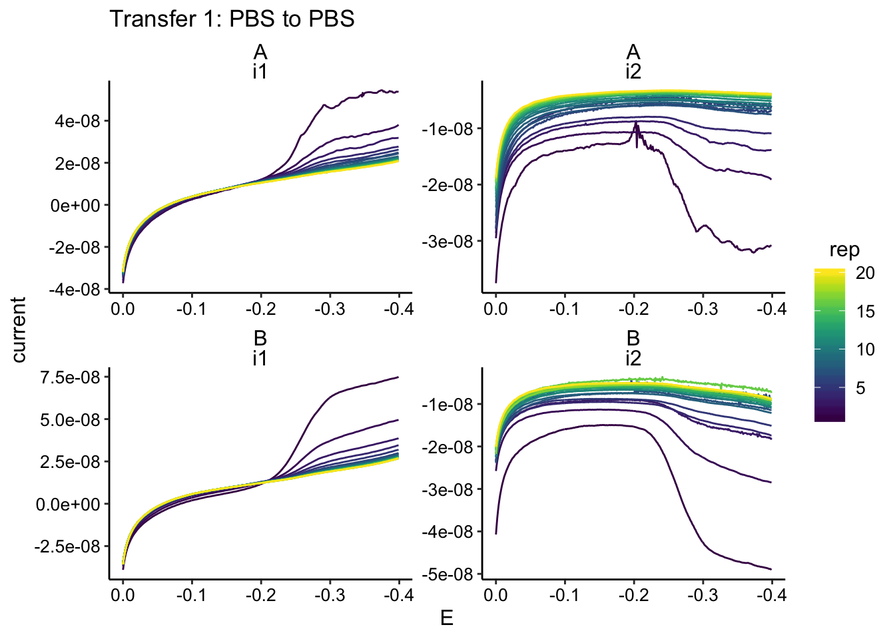
ggplot(gc_data %>% filter(condition == "pbsEtBr"), aes(x = E,
y = current, color = rep, group = rep)) + geom_path() + facet_wrap(biofilm ~
electrode, scales = "free") + scale_x_reverse() + labs(title = "Transfer 2: PBS to EtBr")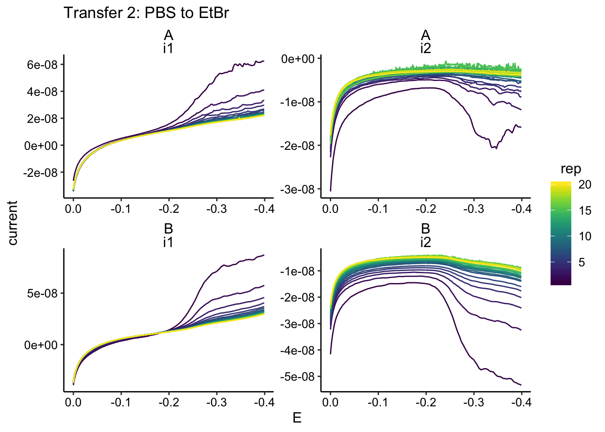
ggplot(gc_data %>% filter(condition == "etbrEtBr"), aes(x = E,
y = current, color = rep, group = rep)) + geom_path() + facet_wrap(biofilm ~
electrode, scales = "free") + scale_x_reverse() + labs(title = "Transfer 3: EtBr to EtBr")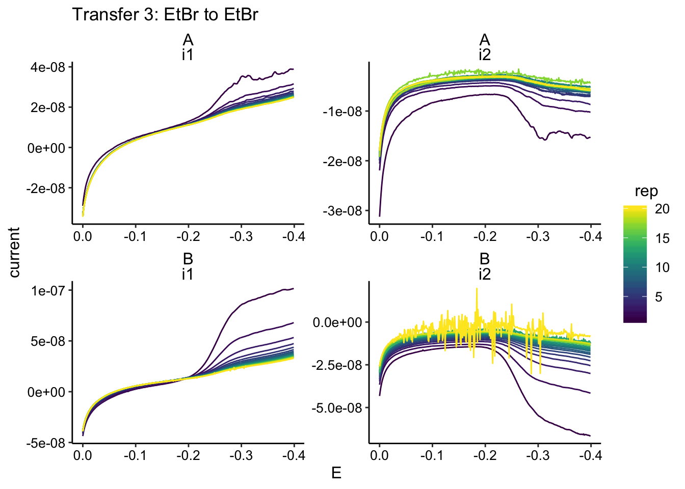
There’s a little bit of noise, but it shouldn’t be an issue. When we process, we’ll just take the final datapoint from the collector:
gc_max <- gc_data %>% group_by(biofilm, condition) %>% mutate(min_time = min(minutes)) %>%
mutate(norm_time = minutes - min_time) %>% group_by(biofilm,
condition, rep, electrode) %>% filter(E == -0.399) %>% mutate(max_current = max(abs(current)),
) %>% filter(abs(current) == max_current)
ggplot(gc_data %>% filter(electrode == "i2"), aes(x = E, y = abs(current),
color = rep, group = rep)) + geom_path() + geom_point(data = gc_max %>%
filter(electrode == "i2"), color = "red") + scale_x_reverse() +
facet_wrap(biofilm ~ condition)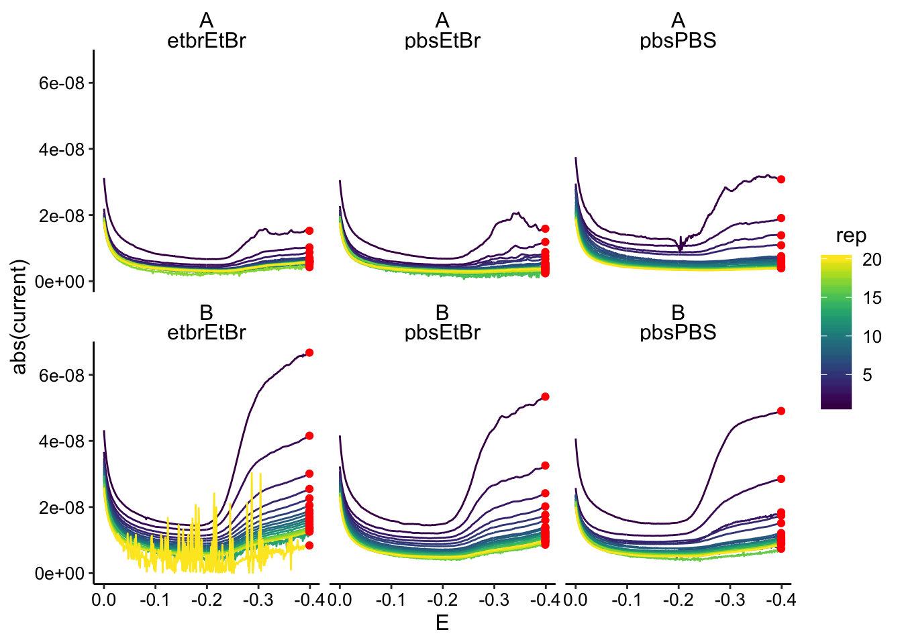
# ggplot(gc_max %>% filter(electrode == 'i2'), aes(x =
# minutes, y = max_current, color = condition)) +
# geom_point() + facet_wrap(~biofilm, scales = 'free')
ggplot(gc_max %>% filter(electrode == "i2"), aes(x = norm_time,
y = max_current, color = condition)) + geom_point() + facet_wrap(~biofilm,
scales = "free")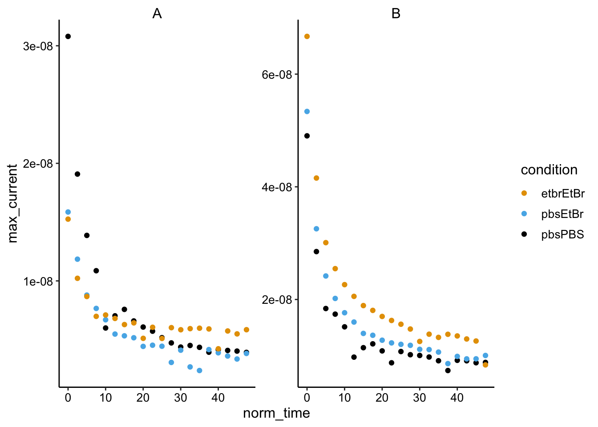
# soak paths
idaA_soak_1 = "../data/biofilm_A/soak_1/"
idaA_soak_2 = "../data/biofilm_A/soak_2/"
idaA_soak_3 = "../data/biofilm_A/soak_3/"
idaB_soak_1 = "../data/biofilm_B/soak_1/"
idaB_soak_2 = "../data/biofilm_B/soak_2/"
idaB_soak_3 = "../data/biofilm_B/soak_3/"# Add 'reactor' to file name so it is parsed into column
soak_filename_cols = c("PHZadded", "PHZ", "biofilm", "reactor",
"reactor_num", "soak_condition", "echem", "rep")
swv_idaA_soak_1_names <- dir(path = idaA_soak_1, pattern = "SWV.*txt")
swv_idaA_soak_2_names <- dir(path = idaA_soak_2, pattern = "SWV.*txt")
swv_idaA_soak_3_names <- dir(path = idaA_soak_3, pattern = "SWV.*txt")
swv_idaB_soak_1_names <- dir(path = idaB_soak_1, pattern = "SWV.*txt")
swv_idaB_soak_2_names <- dir(path = idaB_soak_2, pattern = "SWV.*txt")
swv_idaB_soak_3_names <- dir(path = idaB_soak_3, pattern = "SWV.*txt")
# Add correct paths separate from filenames
swv_idaA_soak_1_paths <- paste(idaA_soak_1, swv_idaA_soak_1_names,
sep = "")
swv_idaA_soak_2_paths <- paste(idaA_soak_2, swv_idaA_soak_2_names,
sep = "")
swv_idaA_soak_3_paths <- paste(idaA_soak_3, swv_idaA_soak_3_names,
sep = "")
swv_idaB_soak_1_paths <- paste(idaB_soak_1, swv_idaB_soak_1_names,
sep = "")
swv_idaB_soak_2_paths <- paste(idaB_soak_2, swv_idaB_soak_2_names,
sep = "")
swv_idaB_soak_3_paths <- paste(idaB_soak_3, swv_idaB_soak_3_names,
sep = "")
# Combine all SWVs into single vector
swv_soak_names <- c(swv_idaA_soak_1_names, swv_idaA_soak_2_names,
swv_idaA_soak_3_names, swv_idaB_soak_1_names, swv_idaB_soak_2_names,
swv_idaB_soak_3_names)
swv_soak_paths <- c(swv_idaA_soak_1_paths, swv_idaA_soak_2_paths,
swv_idaA_soak_3_paths, swv_idaB_soak_1_paths, swv_idaB_soak_2_paths,
swv_idaB_soak_3_paths)
# Read in all SWVs with one function call
swv_soak_data <- echem_import_to_df(filenames = swv_soak_names,
file_paths = swv_soak_paths, data_cols = data_cols, skip_rows = swv_skip_rows,
filename_cols = soak_filename_cols, rep = T, PHZadded = F)
swv_soak_data %>% head() %>% kable() %>% kable_styling()| PHZadded | PHZ | biofilm | reactor | reactor_num | soak_condition | echem | rep | minutes | E | electrode | current |
|---|---|---|---|---|---|---|---|---|---|---|---|
| 0uM | PYO | A | soak | 1 | PBS | SWV | 1 | 910.7333 | 0.099 | i1 | 1e-07 |
| 0uM | PYO | A | soak | 1 | PBS | SWV | 1 | 910.7333 | 0.098 | i1 | 1e-07 |
| 0uM | PYO | A | soak | 1 | PBS | SWV | 1 | 910.7333 | 0.097 | i1 | 1e-07 |
| 0uM | PYO | A | soak | 1 | PBS | SWV | 1 | 910.7333 | 0.096 | i1 | 1e-07 |
| 0uM | PYO | A | soak | 1 | PBS | SWV | 1 | 910.7333 | 0.095 | i1 | 1e-07 |
| 0uM | PYO | A | soak | 1 | PBS | SWV | 1 | 910.7333 | 0.094 | i1 | 1e-07 |
ggplot(swv_soak_data %>% filter(PHZadded == "75uM" & rep == 2),
aes(x = E, y = current, color = reactor_num)) + geom_path() +
facet_wrap(biofilm ~ electrode, scales = "free") + scale_x_reverse()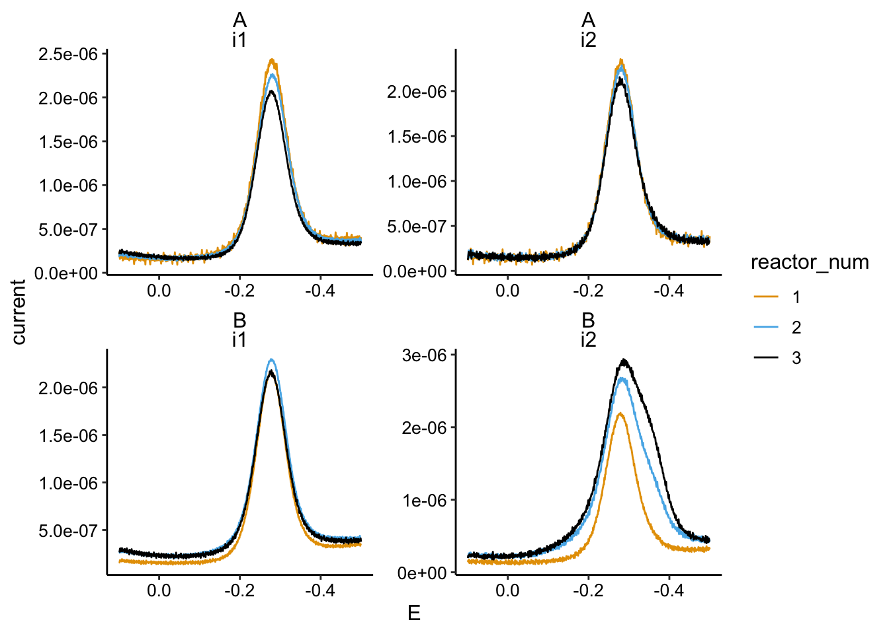
# Add 'reactor' to file name so it is parsed into column
soak_filename_cols = c("PHZadded", "PHZ", "biofilm", "reactor",
"reactor_num", "soak_condition", "echem", "rep")
gc_idaA_soak_1_names <- dir(path = idaA_soak_1, pattern = "GC.*txt")
gc_idaA_soak_2_names <- dir(path = idaA_soak_2, pattern = "GC.*txt")
gc_idaA_soak_3_names <- dir(path = idaA_soak_3, pattern = "GC.*txt")
gc_idaB_soak_1_names <- dir(path = idaB_soak_1, pattern = "GC.*txt")
gc_idaB_soak_2_names <- dir(path = idaB_soak_2, pattern = "GC.*txt")
gc_idaB_soak_3_names <- dir(path = idaB_soak_3, pattern = "GC.*txt")
# Add correct paths separate from filenames
gc_idaA_soak_1_paths <- paste(idaA_soak_1, gc_idaA_soak_1_names,
sep = "")
gc_idaA_soak_2_paths <- paste(idaA_soak_2, gc_idaA_soak_2_names,
sep = "")
gc_idaA_soak_3_paths <- paste(idaA_soak_3, gc_idaA_soak_3_names,
sep = "")
gc_idaB_soak_1_paths <- paste(idaB_soak_1, gc_idaB_soak_1_names,
sep = "")
gc_idaB_soak_2_paths <- paste(idaB_soak_2, gc_idaB_soak_2_names,
sep = "")
gc_idaB_soak_3_paths <- paste(idaB_soak_3, gc_idaB_soak_3_names,
sep = "")
# Combine all gcs into single vector
gc_soak_names <- c(gc_idaA_soak_1_names, gc_idaA_soak_2_names,
gc_idaA_soak_3_names, gc_idaB_soak_1_names, gc_idaB_soak_2_names,
gc_idaB_soak_3_names)
gc_soak_paths <- c(gc_idaA_soak_1_paths, gc_idaA_soak_2_paths,
gc_idaA_soak_3_paths, gc_idaB_soak_1_paths, gc_idaB_soak_2_paths,
gc_idaB_soak_3_paths)
# Read in all gcs with one function call
gc_soak_data <- echem_import_to_df(filenames = gc_soak_names,
file_paths = gc_soak_paths, data_cols = data_cols, skip_rows = gc_skip_rows,
filename_cols = soak_filename_cols, rep = T, PHZadded = F)
gc_soak_data %>% head() %>% kable() %>% kable_styling()| PHZadded | PHZ | biofilm | reactor | reactor_num | soak_condition | echem | rep | minutes | E | electrode | current |
|---|---|---|---|---|---|---|---|---|---|---|---|
| 0uM | PYO | A | soak | 1 | PBS | GC | 1 | 915.1167 | 0.000 | i1 | 0 |
| 0uM | PYO | A | soak | 1 | PBS | GC | 1 | 915.1167 | -0.001 | i1 | 0 |
| 0uM | PYO | A | soak | 1 | PBS | GC | 1 | 915.1167 | -0.002 | i1 | 0 |
| 0uM | PYO | A | soak | 1 | PBS | GC | 1 | 915.1167 | -0.003 | i1 | 0 |
| 0uM | PYO | A | soak | 1 | PBS | GC | 1 | 915.1167 | -0.004 | i1 | 0 |
| 0uM | PYO | A | soak | 1 | PBS | GC | 1 | 915.1167 | -0.005 | i1 | 0 |
ggplot(gc_soak_data %>% filter(PHZadded == "75uM"), aes(x = E,
y = current, color = reactor_num)) + geom_path() + facet_wrap(biofilm ~
electrode, scales = "free") + scale_x_reverse()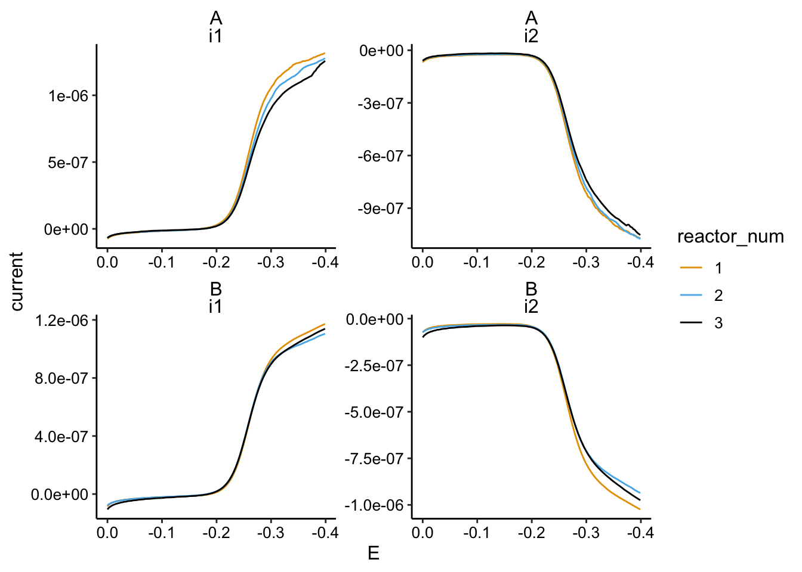
swv_gc_max <- left_join(gc_max, swv_smooth_max, by = c("biofilm",
"condition", "rep", "reactor", "reactor_num"), suffix = c("_from_gc",
"_from_swv"))
ggplot(swv_gc_max %>% filter(electrode_from_gc == "i2" & electrode_from_swv ==
"i1"), aes(x = max_current_from_swv, y = max_current_from_gc,
color = condition)) + geom_point() + geom_smooth(method = "lm") +
facet_wrap(~biofilm, scales = "free")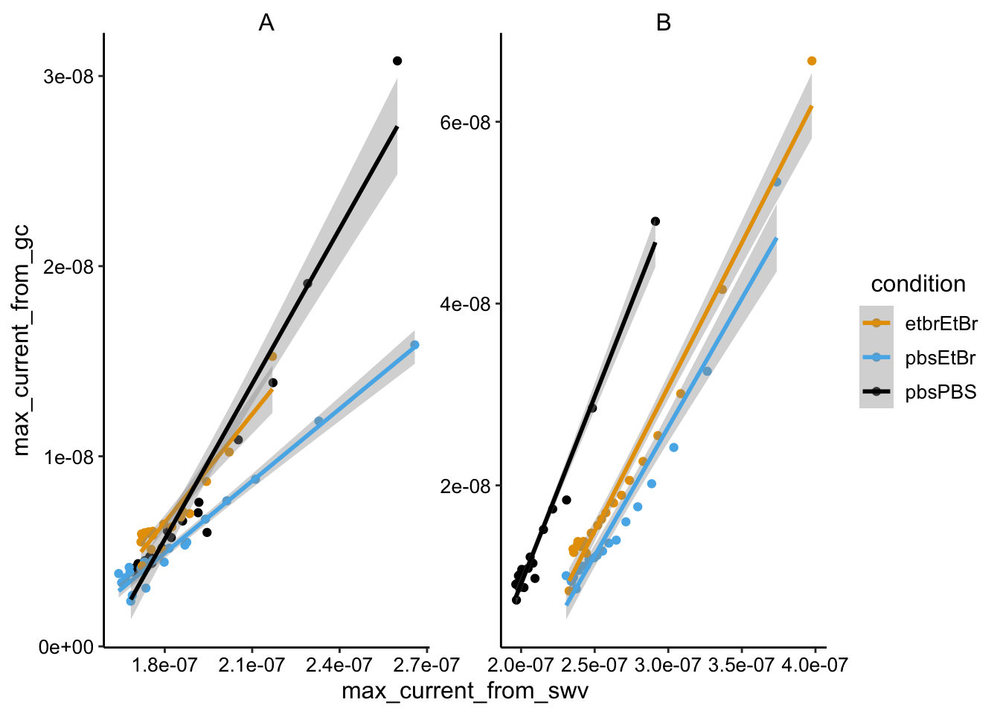
Paired SWV and GC maxes with time info etc:
# write_csv(swv_gc_max, '09_09_19_swv_gc_max_processed.csv')The first SWV and GC from all the transfers:
first_scans <- bind_rows(swv_data_smooth %>% filter(rep <= 1),
gc_data %>% filter(rep <= 1))
# write_csv(first_scans, '09_09_19_first_transfer_reps.csv')Let’s save a file with the soak data all together:
soak_data <- bind_rows(swv_soak_data, gc_soak_data)
# write_csv(soak_data, '09_09_19_soak_data.csv')sessionInfo()## R version 3.5.2 (2018-12-20)
## Platform: x86_64-apple-darwin15.6.0 (64-bit)
## Running under: macOS Mojave 10.14.6
##
## Matrix products: default
## BLAS: /Library/Frameworks/R.framework/Versions/3.5/Resources/lib/libRblas.0.dylib
## LAPACK: /Library/Frameworks/R.framework/Versions/3.5/Resources/lib/libRlapack.dylib
##
## locale:
## [1] en_US.UTF-8/en_US.UTF-8/en_US.UTF-8/C/en_US.UTF-8/en_US.UTF-8
##
## attached base packages:
## [1] stats graphics grDevices utils datasets methods base
##
## other attached packages:
## [1] kableExtra_1.0.1 knitr_1.23 hms_0.4.2
## [4] lubridate_1.7.4 viridis_0.5.1 viridisLite_0.3.0
## [7] modelr_0.1.2 broom_0.5.1 cowplot_0.9.4
## [10] forcats_0.3.0 stringr_1.3.1 dplyr_0.8.1
## [13] purrr_0.2.5 readr_1.3.1 tidyr_0.8.2
## [16] tibble_2.1.3 ggplot2_3.2.0 tidyverse_1.2.1
##
## loaded via a namespace (and not attached):
## [1] tidyselect_0.2.5 xfun_0.7 haven_2.0.0 lattice_0.20-38
## [5] colorspace_1.4-0 generics_0.0.2 htmltools_0.3.6 yaml_2.2.0
## [9] rlang_0.3.4 pillar_1.3.1 glue_1.3.1 withr_2.1.2
## [13] readxl_1.2.0 munsell_0.5.0 gtable_0.2.0 cellranger_1.1.0
## [17] rvest_0.3.2 evaluate_0.14 labeling_0.3 highr_0.7
## [21] Rcpp_1.0.1 scales_1.0.0 backports_1.1.3 formatR_1.5
## [25] webshot_0.5.1 jsonlite_1.6 gridExtra_2.3 digest_0.6.18
## [29] stringi_1.2.4 grid_3.5.2 cli_1.0.1 tools_3.5.2
## [33] magrittr_1.5 lazyeval_0.2.1 crayon_1.3.4 pkgconfig_2.0.2
## [37] xml2_1.2.0 assertthat_0.2.1 rmarkdown_1.13 httr_1.4.0
## [41] rstudioapi_0.9.0 R6_2.4.0 nlme_3.1-140 compiler_3.5.2